İçindekiler
- İçindekiler
- Genel Özet
- Temel Terimler ve Kavramlar
- Ana Gövde: Kronolojik veya Tematik Kayıt
- LABORATUVAR ÇALIŞMA KURALLARI
- Deney 1. Temel Elektrik Devrelerinin Kurulumu
- Teorik Bilgi: Elektrik Devresi
- Pratik çalışma 2: İletkenin cinsi ve boyutlarına göre direncinin değişimini incelemek
- Pratik çalışma 3: Galvanometre yapısı ve Direnç Ölçmek
- Pratik çalışma 4: Analog Ampermetre ve Voltmetre Yapısı, DC Akım ve Gerilimin ölçülmesi.
- Pratik çalışma 5: Alternatif Akımda (AC) AKIM VE GERILIMIN ÖLÇÜLMESi
- Pratik çalışma 5: Sigorta telinin incelenmesi
- Deney 2. Devre doğrudan ve dolaylı ölçümler yoluyla Akım, Voltaj, Direnç ve Güç değerlerinin Ölçülmesi ve hata hesabı
- Deney 3: Alternatif akımda Akım, Gerilim, Güç, Cosф ve Enerji Ölçümü
- DENEY No 4: Osiloskop ve Alternatif Akım Dalga Şekillerinin incelenmesi. Genlik, Frekans ve faz farkı Ölçümleri, Ortalama ve Etkin Değerler
- DENEY No 5: Direnç Renk Kodları, Deney Tahtası, CADET Deney Seti ve Multimetre Kullanımı
- DENEY NO: 6.1 Elektromıknatısın demiri çekmesi ve çekme kuvvetinin hesabı
- DENEY NO: 6.2 Elektromanyetik İndüksiyon
- Temel Formüller ve Hızlı Bilgiler
- Kaynaklar
Genel Özet
Bu belge, Konya Teknik Üniversitesi Mühendislik ve Doğa Bilimleri Fakültesi Elektrik-Elektronik Mühendisliği Bölümü tarafından hazırlanan “Temel Elektrik ve Ölçme Laboratuvarı Deney Föyü” içeriğini ayrıntılı olarak sunmaktadır. Temel elektrik devrelerinin kurulumundan, akım, gerilim, direnç ve güç ölçümlerine, alternatif akım devrelerinin incelenmesinden, osiloskop kullanımı ve elektromanyetik indüksiyona kadar geniş bir yelpazede konuları kapsamaktadır.
Döküman, elektrik devre elemanlarının tanınması, analog ve dijital ölçü aletlerinin doğru ve güvenli bir şekilde kullanılması, ölçümlerde oluşabilecek hataların analizi ve uygulamalı pratik çalışmalarla öğrencilerin teorik bilgilerini pekiştirmeyi ve pratik becerilerini geliştirmeyi hedeflemektedir. Her deneyin amacı, teorik arka planı ve adım adım uygulama talimatları verilerek öğrencinin aktif katılımı desteklenmektedir. Elektrik ve elektronik mühendisliğinin temel taşlarını oluşturan bu konular, öğrencilerin ileriki dersler ve mesleki yaşamları için sağlam bir temel oluşturmasını sağlamayı amaçlar.
Temel Terimler ve Kavramlar
- Elektrik Devresi: Güç kaynağı, anahtar, alıcılar (yükler) ve iletken tellerden oluşan, elektrik akımının belirli bir düzende akmasını sağlayan yapıdır.
- Özdirenç (
ρ): Bir malzemenin elektrik akımına karşı gösterdiği direncin maddenin yapısına bağlı olarak değişen özelliğidir. - Ohm Kanunu: Bir devredeki gerilimin (
V), akım (I) ve direnç (R) arasındaki ilişkiyi ifade eden temel kanun (). - Ampermetre: Elektrik devresindeki akım şiddetini ölçmek için devreye seri bağlanan, iç direnci çok düşük olan ölçü aleti.
- Voltmetre: Bir devredeki iki nokta arasındaki potansiyel farkını (gerilimini) ölçmek için devreye paralel bağlanan, iç direnci çok yüksek olan ölçü aleti.
- Osiloskop: Bir sinyalin zamanla değişimini grafiksel olarak (genellikle voltaj-zaman) gösteren, periyodik sinyallerin genlik, frekans ve faz farkı gibi özelliklerini incelemeye yarayan elektronik ölçüm cihazı.
- Etkin (Efektif) Değer (RMS): Alternatif akımın bir dirençte, doğru akımla eş değerde etki yaptığı değeridir. AC ölçü aletleri genellikle bu değeri gösterir.
- Elektromanyetik İndüksiyon: Manyetik akıdaki değişimin, bir iletkende (bobinde) gerilim indüklemesi olayıdır. Faraday ve Lenz Kanunları ile açıklanır.
- Sigorta: Elektrik devrelerini aşırı akıma karşı koruyan, devreden geçen akım belli bir değeri aştığında devreyi açan güvenlik elemanı.
- Wattmetre: Alternatif akım devrelerinde alıcının harcadığı aktif gücü ölçmek için kullanılan ölçü aleti.
Ana Gövde: Kronolojik veya Tematik Kayıt
Hazırlayan: Öğr. Gör. Dr. Yalçın EZGINCI, Dr. Öğr. Üyesi Dilek UZER
LABORATUVAR ÇALIŞMA KURALLARI
Laboratuvar çalışmalarının düzenli ve verimli geçmesi için aşağıdaki kurallara uyulması zorunludur:
- Deneylere 5 dakikadan fazla geç gelen öğrenciler yok yazılacaktır.
- Deney föyü olmayan öğrenciler kesinlikle deneye alınmayacak ve o hafta devamsız sayılacaklardır.
- Her öğrenci deneye gelmeden önce föye çalışacaktır. Deney öncesinde veya deney sırasında öğrencinin deneyle ilgili bilgisi ölçülecektir.
- Deneye normal zamanında gelmeyen öğrenci diğer gruplar ile deney yapamaz. İki defa deneye katılmayan öğrenci devamsızlıktan kalır.
- Öğrencinin deney tarihinden önce sorumlu öğretim elemanı ile irtibat kurarak, uygun mazeret göstermesi koşuluyla, başka bir grupta deney yapma isteği değerlendirilir. Mazereti uygun görülürse deney tarihi değişikliği yapılır. Öğrenci vaat ettiği tarihte gelmez ise devamsız sayılır.
- Dersin devamını almış, dersi alttan alan öğrencilerin de derse katılmaları zorunludur.
Deney 1. Temel Elektrik Devrelerinin Kurulumu
Deneyin Amacı: Elektrik devresinin bileşenlerini tanımak, elektrik devresi kurmak ve Analog ölçü aletleri ile direnç, akım ve gerilim ölçmek.
Öğrenme Çıktıları: Elektrik devresinin bileşenlerini seçebilme, Elektrik devresini kapalı çevrimini anlama, Elektrik devresi kurabilme, Akım ve Gerilim Ölçme.
Teorik Bilgi: Elektrik Devresi
Bir elektrik devresi, iletken teller (kablolar) kullanılarak alıcıların ısı, ışık veya mekanik güç sağlamak üzere kullanılır. Aydınlatmadan haberleşmeye ve endüstride iş ve kuvvet üretmeye kadar hayatın her alanında kullandığımız elektrik, elektronik ve bilgisayar sistemlerinin temelinde elektrik devreleri vardır.
Temel bir elektrik devresi; güç kaynağı, anahtar, direnç bileşenlerine sahip alıcılar (yükler) ve bunları birbirine belli bir düzende birleştiren iletken tellerden meydana gelir. Elektrik akımı, bir elektrik devresinde bileşenler tam bir çevrim oluşturduğunda akabilir. Akımın akması ve işe yaraması için bileşenlerin doğru bir şekilde belirli bir bilgi ve mantığa göre birbirine bağlanması gerekir.
Infobox
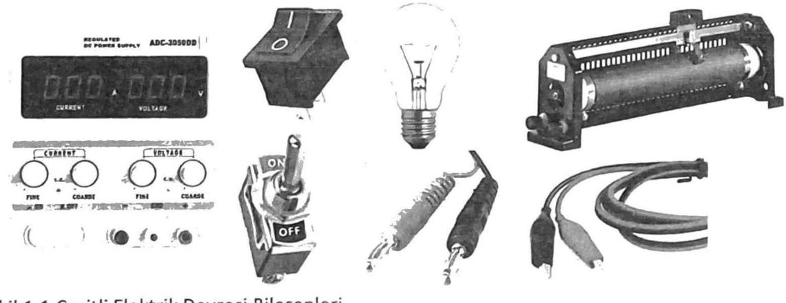
Şekil 1.1: Çeşitli Elektrik Devresi Bileşenleri
- Güç Kaynağı: Herhangi bir enerjiyi elektrik enerjisine dönüştüren sistemlere elektrik enerji kaynağı denir.
Doğru akım kaynakları(akümülatör, pil, dinamo) vealternatif akım kaynakları(şehir şebekesi, jeneratör, alternatör ve sinyal kaynağı) bulunur. - Anahtarlar: Elektrik akımının kontrolünü sağlarlar ve devreye seri bağlanırlar. Açık konumda akım akmazken, kapalı konumda akım akar.
- Sigorta: Elektrik devrelerinden geçen akım şiddeti istenilmeyen değerlere yükseldiğinde devre elemanlarının hasar görmesini önlemek için kullanılır. Akım belli bir değerin üstüne çıktığında devreyi açar.
- Alıcı ya da Yük: Elektrik enerjisini başka bir enerjiye dönüştüren cihazlardır (ütü, lamba, radyo vb.).
- İletkenler: Bakır, alüminyum gibi yüksek geçirgenliğe sahip metallerden yapılırlar ve devre elemanlarını bağlamak amacıyla kullanılırlar. Akım taşıma kapasitelerine göre belirlenmiş standartlara sahiptirler.
- Sürgülü Reosta (Ayarlı Direnç): Devredeki akım ve voltaj değişikliklerini kontrol etmek için kullanılır. Direnç telinin uzunluğunu değiştirerek devredeki akımı kademeli olarak ayarlar.
Infobox
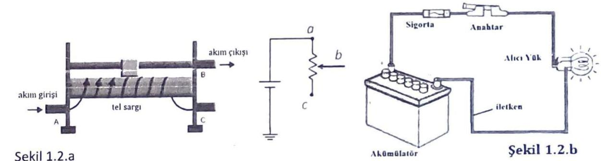
Elektrik devreleri, çalıştırdıkları alıcılara ve uygulanan gerilimin büyüklüğüne göre sınıflandırılabilir (alçak, orta, yüksek gerilim). Ayrıca akım şiddetine göre (hafif akım, kuvvetli akım) ve akımın geçip geçmemesine göre (açık, kapalı, kısa devre) isimlendirilebilirler.
- Kapalı Devre: Akımın normal bir şekilde akıp alıcının çalıştığı devredir. Şekil 1.2.b’de temsili resmi görülmektedir. Ampulün ışık vermesi için devrenin kapalı bir çevrim oluşturması ve uygun voltaj değerine ulaşılması gerekir.
- Açık Devre: Akımın geçtiği yolun bir parçasının açık olması veya direncinin sonsuz olması durumunda akım akışının durduğu devredir (Şekil 1.3.a). Bu durumda akım sıfırdır.
- Kısa Devre: Gerilim kaynağı terminallerinin doğrudan veya iletkenler vasıtasıyla birbirine temas etmesi durumudur. Direnç değeri teorik olarak sıfır kabul edildiğinden, devreden sonsuz akım geçişi beklenir.
Infobox
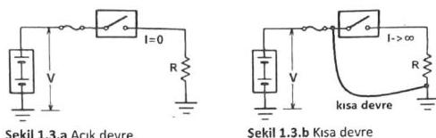
Pratik çalışma 1: Doğru akım devresi kurmak
DENEYİN YAPILIŞI:
Infobox
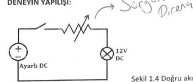
Şekil 1.4 Doğru akım deney devresi
- Deney devresi Şekil 1.4’de verilmiştir. Uygun devre elemanları seçilir. Verilen bileşenlerin uygunluğu incelenir. Uygun kablolar kullanılarak devre bağlantısı gerçekleştirilir. Güç kaynağını devreye bağlamadan önce (boşta iken) çalışmasını kontrol ediniz. Reostayı yüksek değere getiriniz.
- Deney bağlantılarınızı, sorumlu öğretim elemanına kontrol ettiriniz.
- Sorumlu öğretim elemanı gözetiminde elektrik devresine enerji veriniz. Direnç değerini yavaş yavaş azaltarak, sıfıra gelinceye kadar lamba ışığının artmasını gözleyiniz.
- Güç kaynağının Voltaj değerini yükselterek gözleminize devam ediniz. 12 V olduğunda bu defa direnç değerini tekrar yavaş yavaş artırınız.
- Güç kaynağını kapatarak deneyi sonlandırın.
Pratik çalışma 2: İletkenin cinsi ve boyutlarına göre direncinin değişimini incelemek
Elektrik direnci, elektrik akımının geçişine karşı koyan etkidir ve Ohm Kanunu ile ifade edilir:
- R: Direnç (Ohm, Ω)
- V: Gerilim (Volt, V)
- I: Akım (Amper, A)
Akımın bir devreden geçme kolaylığının bir ölçümü olan 1/R’ye iletkenlik denir. İletkenlik G ile gösterilir ve birimi siemens (S)‘tir. Bir iletkenin direnci R, sabit bir sıcaklıkta özdirenç ve boyut değerlerine bağlıdır:
Burada;
l: uzunluk (m)ρ: malzemenin cinsine bağlı olan özdirenç katsayısı (Ωmm²/m)S: Kesit alanı (mm²)
| l, uzunluk (m) | ρ (Ωmm²/m) cinsinde malzemenin cinsine bağlı olan özdirenç katsayısı |
|---|
Tablo 1. Bazı metal malzemelerin özdirenç (ρ) değerleri
| Madde | Özdirenç (Ω · m) 20°C | Sıcaklık katsayısı (K⁻¹) |
|---|---|---|
| Gümüş | 1.59 · 10⁻⁸ | 0.0038 |
| Bakır | 1.72 · 10⁻⁸ | 0.0039 |
| Altın | 2.44 · 10⁻⁸ | 0.0034 |
| Alüminyum | 2.82 · 10⁻⁸ | 0.0039 |
Kablo Tipleri: Kullanım ortamı ve şartlarına göre farklı kesit ve gerilim seviyelerine sahip iletken kablolar kullanılır. Kesit, üzerinden geçecek akım değerine göre hesaplanır ve akım taşıma kapasitesi dikkate alınır.
Infobox
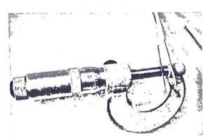
Kablo Kesiti Hesabı: Mikrometre gibi aletlerle tel çapı ölçülerek kesit hesaplaması yapılır.
Infobox
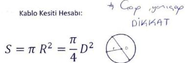
Şekil 1.5: Mikrometre ile tel çapı ölçmek
İletken kesiti hesaplanırken n-P₁ sayısı, R-iletken çapı, n= Kullanılan iletken sayısı (n, R², n) / 4 formülü ile hesaplanır. | Örnek: 3 mm çapında 7 telin bukumu ile oluşturulan iletkenin kesiti nedir? (3,14 × 3² × 7) / 4 = 197,82 / 4 = ~49,45 mm² = 50 mm² |
|---|
İletken telin kesiti, bakır, alüminyum veya çelik olmasına göre akım taşıma kapasitesi veya diğer şartlara göre standartlarla belirlenmiştir.
Tablo 1.2 Bakır tel Akım Taşıma Kapasiteleri (25°C)
İletken kesiti (mm²) | 1 | 1.5 | 2.5 | 4 | 6 | 10 | 16 | 25 | 50 | 70 | 120 | 150 |
|---|---|---|---|---|---|---|---|---|---|---|---|---|
| Akım Taşıma kapasitesi (Amper) | 15 | 18 | 26 | 38 | 44 | 68 | 80 | 109 | 163 | 202 | 285 | 320 |
Deneyin Yapılışı: Verilen farklı boyutlardaki tellerin direncini hesaplama
- Tel kesitini hesaplamak için verilecek telin çapını kumpas veya mikrometre (mekanik veya elektronik olabilir) ölçmesini yapınız. (Şekil 1.5)
- Yukarıda verilen formüle göre tel kesitini hesaplayınız.
- Seçtiğiniz tellerin en fazla ne kadar akım taşıyabileceğine Tablo 2’ye bakarak karar veriniz.
Pratik çalışma 3: Galvanometre yapısı ve Direnç Ölçmek
Elektrik devrelerine, çeşitli devre büyüklüklerinin ölçülmesi amacıyla ölçü aletleri bağlanabilir (Ampermetre, Voltmetre veya Ohmmetre). Bu ölçü aletlerinin temeli analog Galvanometre’ye dayanmaktadır.
Infobox
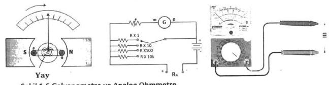
Şekil 1.6: Galvanometre ve Paralel tipte Ohmmetrenin açık şeması, Ohmmetre olarak konumlanmış bir analog Multimetre
DENEYİN YAPILIŞI:
- Farklı özellik ve farklı boyutlardaki tel veya kablolar alınız. Her birinin özelliklerini ve boyutlarını not ediniz.
- Her bir tel ve kablonun direnç değerlerini Şekil 1.6’de gösterildiği gibi ohmmetre ile ölçerek not ediniz.
- Ölçtüğünüz değerler ve iletken teller için yorum yapınız. Sonucu özetle ifade ediniz.
Pratik çalışma 4: Analog Ampermetre ve Voltmetre Yapısı, DC Akım ve Gerilimin ölçülmesi.
Akım: Elektrik devresinde birim zamanda geçen elektron yükü miktarıdır. I harfi ile gösterilir ve birimi Amper (A)‘dir. Devre akımı, akım yoluna seri bağlanan Ampermetre ile ölçülür. Ampermetrenin iç direnci çok küçük olmalıdır. Bunun için galvanometreye az sarımlı kalın tellerden yapılmış şönt (paralel) direnç bağlanır (Şekil 1.7.a). Ampermetre devreye paralel bağlanırsa devreden çok yüksek akım geçişine ve ölçü aletinin yanmasına sebep olabilir.
Infobox
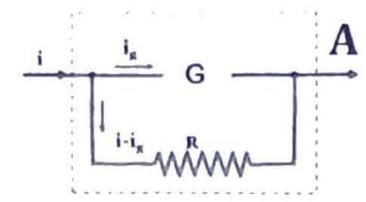
Şekil 1.7.a Ampermetre Teşkili
Potansiyel farkı (Gerilim): Elektrik yüklerinin bir noktadan başka bir noktaya hareket edebilmesi için gerekli olan elektriksel kuvvettir. V harfi ile gösterilir ve birimi Volt (V)‘tur. Bir bileşenin potansiyel farkı veya gerilimi, ona paralel bağlanan Voltmetre ile ölçülür. Voltmetrenin iç direnci çok büyük olmalıdır. Bunun için galvanometreye çok sarımlı ince tellerden yapılan seri direnç bağlanır (Şekil 1.7.b). Voltmetre devreye seri bağlanırsa, devreden akım geçirmez ve açık devreye dönüştürür.
Infobox
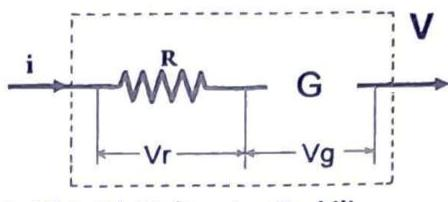
Şekil 1.7.b Voltmetre Teşkili
Deneyin Yapılışı
-
Şekil 1.8.a’daki devre için
0-12 V DCkaynak ve0,6-1,2 Adeğerlerini ölçebilecek Ampermetre, yük olarak bu değerlere uygun, wattlı dirençleri direnç kutusundan seçilecektir. -
Şekil 1.8.a’daki devreyi kurunuz. Devreye güç vermeden önce aşağıdaki uyarıları dikkate alınız:
- Ampermetreler devreye yanlışlıkla paralel bağlanırsa alet yanabilir.
- Ampermetrenin iç direnci çok küçük olduğundan böyle bir bağlantıda kısa devre etkisi görülür.
- Devreden büyük bir akım geçeceğinden devre sigortası atar veya alet yanabilir.
-
Şekil 1.8.b’deki devre için kademeli bir voltmetre seçiniz. Yine direnç kutusundan direnç seçiniz.
-
Şekil 1.8.b’deki devreyi kurunuz. Devreye güç vermeden önce aşağıdaki uyarıları dikkate alınız:
- Voltmetreler yanlışlıkla devreye seri bağlanırsa iç dirençleri çok büyük olduğundan devrenin toplam direncini artırırlar.
- Alıcı gerilimi düşer, akımı çok azalır ve çalışamaz. Fakat voltmetre bundan zarar görmez. Voltmetreler devreye kesinlikle seri bağlanmazlar.
Infobox
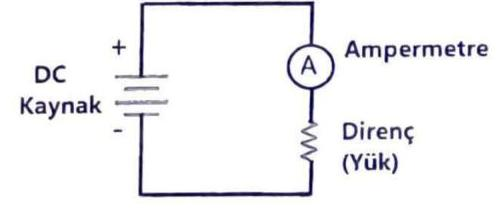
Şekil 1.8.a Ampermetre ile akım ölçme
Infobox
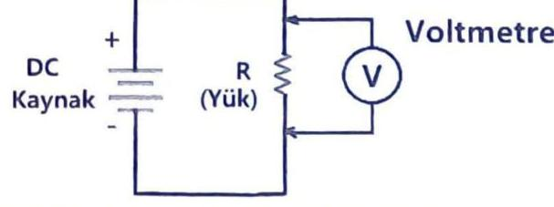
Şekil 1.8.b Voltmetre ile gerilim ölçme
Pratik çalışma 5: Alternatif Akımda (AC) AKIM VE GERILIMIN ÖLÇÜLMESi
Bu bölümde AC gerilim kaynağı olarak Varyak kullanılacaktır. Varyak, 220 V şebeke voltajını genellikle daha küçük istenilen bir AC voltaja çeviren, ayarlı bir transformatördür (Şekil 1.9.a). Değişken AC gerilim değerleri elde etmek için kullanılır.
Infobox
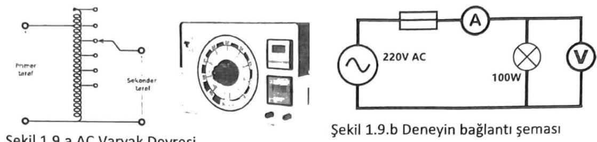
Şekil 1.9.a AC Varyak Devresi
DENEYİN YAPILIŞI:
- Şekil ile verilen deney bağlantı şemasını uygun elemanlar ile kurunuz.
- Devreye uygulanacak gerilim ve yükün gücü belli olduğuna göre, devreden geçecek akımı ve yük uçlarındaki gerilimi yaklaşık olarak hesaplayınız.
- Kullanacağınız aletler, hesapladığınız değerlere uygun mu? Kontrol ediniz.
- Bağlantı doğru ve aletlerin ölçme alanları uygun ise, bağlantınızı bir de sorumlu öğretim elemanına kontrol ettiriniz.
- Devrenize enerji veriniz. Aletlerden okuduğunuz değerleri, önceden hazırladığınız tabloya yazınız.
- Kaynak olarak çıkış gerilimi ayarlanabilir bir kaynak, yük olarak da bir reosta kullanarak deneyi tekrarlayınız. Küçükten büyüğe doğru aldığınız değerleri tablo şeklinde kaydediniz.
Pratik çalışma 5: Sigorta telinin incelenmesi
Tesisattaki iletkenlerin kullanım akımları ve ince bir iletken telin akım geçirilerek kopması deneyi (ergime akımı) incelenecektir. Elektrik tesislerinde kullanılan iletkenler, belli bir akıma kadar dayanırlar. Daha yüksek değerli akımlarda ise ısınır, kızarır ve ergirler. Buşonlu sigortalar bu özellikten faydalanılarak yapılırlar.
Elektrik sigortası: Üzerinden aşırı akım geçtiğinde devreyi açan elemanlardır. Aşırı sıcaklıklar, kısa devre ve güç dalgalanmaları gibi potansiyel tehlikeleri ortadan kaldırır. Devrelerin giriş bölümünde yer alır ve Amper olarak sınıflandırılır (6A, 10A, 16A, vb.).
Sigortalar, devre akımının belirli bir değeri aşması ile eriyen tel (veya şerit), ya da üzerinde akım geçen bir bimetalin akım fazla olduğunda bir kontağı açması ile bir rölenin elektromıknatıs ile çekmesi (otomatik sigorta) suretiyle bağlantıyı kesmesi esasına göre çalışır. “Sigorta attı” tabiri bu durumu ifade eder.
Infobox
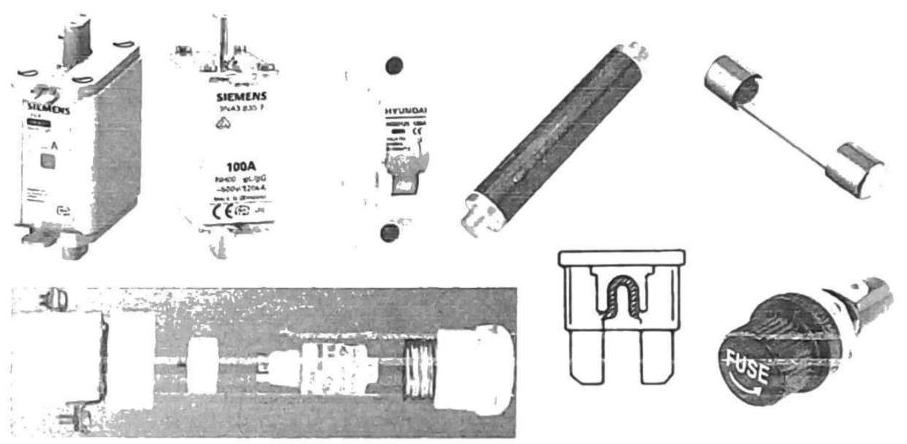
Şekil 1.10: Çeşitli sigorta tipleri
Sigorta Tipleri (Kullanım Yerlerine Göre):
- Cam Tipi Sigortalar: Elektrik cihazları ve elektronik devrelerde kullanılır.
- Buşon Tipi Sigortalar: Elektrik tesisatlarının korunması amacıyla alçak gerilimli şebekelerde kullanılır.
- Otomatik Sigortalar: Üzerinden geçen akım sınır değeri aştığında içerideki bimetal bükülerek sigortayı attırır.
- Bıçaklı Tip Sigortalar: Büyük akımlarda kullanılırlar, sanayide motorları ve güçlü alıcıları korumak için tasarlanmıştır. Yüksek akımlarda ve endüstriyel uygulamalarda güvenilir koruma sağlarlar.
- Yüksek Gerilim Sigortaları: Yüksek gerilimli sistemlerde koruma sağlamak üzere özel olarak tasarlanmıştır. Genellikle trafo merkezleri ve enerji dağıtım hatlarında kullanılırlar.
Devreyi Açma Zamanlarına Göre Sigortalar: Normal, Gecikmeli, Hızlı ve Çok Hızlı özellikli olabilir.
Infobox
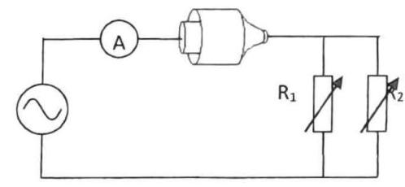
Şekil 1.11: Deneyin bağlantı şeması
Deneyin Yapılışı
- Şekil 1.11’deki devre bağlantısını kurunuz.
- Devrede kullanılan reosta (ayarlı direnç) taşıyabileceği maksimum akıma göre direnç değerlerini seçin.
- Damarlı bir kablonun bir damarını keserek deney noktasına monte edin.
- Ayarlı gerilim kaynağından (Varyak), gerilimi sıfırdan itibaren yavaş yavaş artırırken akımın akmasını takip edin, telin kızarmaya başladığında daha da yavaş hareket ettirerek erime anına kadar akım ve gerilim değerlerini kaydedin.
- Aynı işlemi iki tel damarı kullanarak tekrarlayın. Sonucu yorumlayın.
Deney 2. Devre doğrudan ve dolaylı ölçümler yoluyla Akım, Voltaj, Direnç ve Güç değerlerinin Ölçülmesi ve hata hesabı
Deneyin Amacı: Temel elektrik devrelerinde Ampermetre ve Voltmetre ile Akım ve Gerilimin ölçülmesi, Direnç ve Güç değerlerinin hesaplama yoluyla bulunması, yapılan ölçümlerdeki hata miktarlarının hesaplanması.
Ön Bilgi
Ölçme: Bilinmeyen bir büyüklüğün aynı türden olan, ancak bilinen bir büyüklükle kıyaslanması ile elde edilen sayısal miktardır. Amacı gerçek değere en yakın sonucu elde etmektir. Hiçbir ölçüm hatasız yapılamaz.
Ölçmede Hata: Ölçülen özelliğin gerçek değeri ile ölçme sonuçlarında elde edilen değer arasındaki farktır. Ölçü aletlerinin %0,1-%2,5 gibi doğruluk dereceleri vardır.
Örnek: %0,5 sınıfı bir voltmetre, son skala taksimatı 400 V ise, en büyük ölçüm hatası %0,5 × 400 = 2 V olur. Eğer 221 V gösteriyorsa, ölçüm sonucu V = 221 ± 2 V olarak yazılır.
Bağıl hata (%ε): Ölçülen büyüklüğün gerçek değerinden yüzde kaçı kadar hatalı olduğunu verir.
%ε = (ΔV / V) × 100 örneğin, (4 / 221) × 100 = %0,9. Bağıl hatayı azaltmak için uygun ölçü aleti ve hassas kademe seçimi önemlidir.
Anlamlı Rakamlar: Kesinliği bilinen rakamlar anlamlı rakamlar olarak adlandırılır. Örneğin, 0,055, 7,08, 10,00 anlamlı rakamlara sahiptir. İndirgeme yaparken kesme ve yuvarlama işlemleri kullanılır.
Hataların bileşkesi
Bir sonuç çok sayıda değişkene bağlı ise bu durumda hataların bileşkesi hesaplanır. Genel ifadesi:
Basit işlemler için:
- Toplama - Çıkarmada:
ΔQ ≈ Δx + Δy - Çarpma - Bölmede:
ΔQ ≈ Q((Δx / x) + (Δy / y))
Akım Ve Gerilim Ölçme
Malzemeler: DC Gerilim Kaynağı, Analog Ampermetre (%05 ve %2 sınıfı), Voltmetre, Dirençler (10 Ω, 20 Ω vb. taş dirençler veya Reostalar).
Infobox
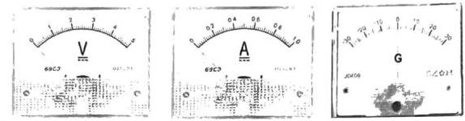
Şekil 1: Tablo tipi ölçü aletleri
Deneyin Yapılışı (1. Bölüm)
- Şekil 2’de verilen devre için gerekli malzemeleri hazırlayın, özelliklerini belirleyin.
- Voltmetrelerin voltaj kademesi seçimini yapın.
- Devrenin kurulumunu yapın, kontrol ettikten sonra Güç kaynağını
12 Voluncaya kadar artırın. Dirençlerin uçlarında gördüğünüz voltaj değerlerini kaydedin. - Ölçtüğünüz değerleri voltmetrelerin sınıfını göz önüne alarak hata değeri de olacak şekilde ölçüm sonucunu yazınız.
- İki voltmetre ile ölçtüğünüz değerin toplamını hata hesabı ile birlikte yapınız.
- Elde ettiğiniz sonucu, Güç kaynağının gösterdiği voltaj değeri ile karşılaştırın ve yorumlayın.
Infobox
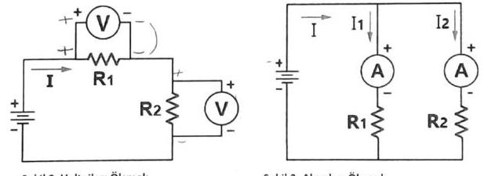
Şekil 3: Akımları Ölçmek
- Şekil 3’de verilen devre için gerekli malzemeleri hazırlayın, özelliklerini belirleyin.
- Ampermetreler için uygun kademe seçin.
- Devrenin kurulumunu yapın, kontrol ettikten sonra Güç kaynağını
12 Voluncaya kadar artırın. - Devre kollarından geçen akım değerlerini kaydedin. Ölçtüğünüz değerleri Ampermetrelerin sınıfını göz önüne alarak hata değeri de olacak şekilde ölçüm sonucunu yazınız.
- İki Ampermetre ile ölçtüğünüz değerin toplamını hata hesabı ile birlikte yapınız.
- Elde ettiğiniz sonucu, Güç kaynağının gösterdiği akım değeri ile karşılaştırın ve yorumlayın.
Güç Ölçme (Ampermetre ve Voltmetre ile)
Malzemeler: DC Gerilim Kaynağı, Analog Ampermetre (%05 ve %2 sınıfı), Voltmetre, Dirençler (10 Ω, 20 Ω vb. taş dirençler veya Reostalar).
Deneyin Yapılışı (2. Bölüm)
- Şekil 4’de verilen devre için gerekli malzemeleri hazırlayın, özelliklerini belirleyin.
- Devrenin kurulumunu yapın, kontrol ettikten sonra Güç kaynağının değerini devre akımı en az
1Ave tam okunabilecek bir değere kadar artırın. Bu anda Ampermetre ve Voltmetreden okuduğunuz değerleri kaydedin. - Ölçtüğünüz değerleri Ampermetre ve Voltmetrelerin sınıfını göz önüne alarak hata değeri de olacak şekilde ölçüm sonucunu yazınız.
- İki ölçü aleti ile ölçtüğünüz değeri kullanarak dirençte harcanan elektrik gücünü ve birleşik hata hesabını yaparak güç değerini ifade edin.
- Elde ettiğiniz sonucu, Güç kaynağının gösterdiği değerler ile karşılaştırın ve yorumlayın.
Infobox
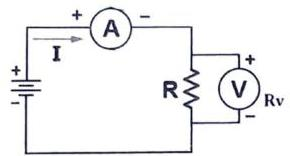
Şekil 4: Akım ve Gerilim yolluyla Direnç ve/veya Güç Ölçmek
Direnç Ölçme
Direnci ölçmek için farklı yöntemler mevcuttur. Bileşen değerlerinin hassas ölçümleri köprü benzeri yapılar ile yapılabilmektedir. Direnç değerlerinin büyüklüğüne göre farklı yöntemler veya aletler kullanılmaktadır.
Direnç Değerlerine Göre Kategoriler:
- Düşük direnç: Değeri
1 Ω’a eşit veya daha küçük olan dirençler (örn: makinelerin armatür sargıları, ampermetre şöntleri). - Orta direnç: Değerleri
1 Ωile100 kΩarasında değişen dirençler (örn: elektronik devrelerde kullanılan dirençler). - Yüksek direnç:
100 kΩ’ın üzerindeki değerlere sahip dirençler.
Direnç Ölçümünde Kullanılan Yöntemler:
- Düşük direnç: Ampermetre-Voltmetre Yöntemi
- Orta Direnç: Wheatstone Köprü Yöntemi
- Yüksek direnç: Megger
Ampermetre-Voltmetre Yöntemi ile Direnç Ölçmek
Bu yöntem, %1 düzeyindeki doğruluğun yeterli olduğu durumlarda düşük direnç değerini ölçmek için kullanılır. Ohm Kanunu’nu kullanarak bilinmeyen direncin değerini belirler. Şekil 4’teki devre düzeninde bilinmeyen dirençten (RX) geçen akım ve bunun üzerindeki potansiyel düşüş aynı anda ölçülür. R = V/I formülüyle hesaplanan R değeri, voltmetrenin iç direnci (Rv) sebebiyle gerçek RX değerinden farklıdır. Gerçek değer şu formülle bulunur:
Deneyin Yapılışı (3. Bölüm)
- Şekil 4’de verilen devre için gerekli malzemeleri hazırlayın, özelliklerini belirleyin.
- Devrenin kurulumunu yapın, kontrol ettikten sonra Güç kaynağının değerini devre akımı en az
1Ave tam okunabilecek bir değere kadar artırın. Bu anda Ampermetre ve Voltmetreden okuduğunuz değerleri kaydedin. - Ölçtüğünüz değerleri Ampermetre ve Voltmetrelerin sınıfını göz önüne alarak hata değeri de olacak şekilde ölçüm sonucunu yazınız.
- İki ölçü aleti ile ölçtüğünüz değeri kullanarak ve ohm kanununa uygun olarak direnç değerini bulun, hata hesabını yapınız. Sonucu ifade ediniz.
- Elde ettiğiniz sonucu, Güç kaynağının gösterdiği değerler ile karşılaştırın ve yorumlayın.
Wheatstone Köprü Devresi ile Direnç Ölçmek
Şekil 5.a, temel Wheatstone Köprüsü devresini göstermektedir. Köprü, bir emk kaynağı ve bir sıfır dedektörüyle birlikte dört dirençli kola sahiptir.
Infobox
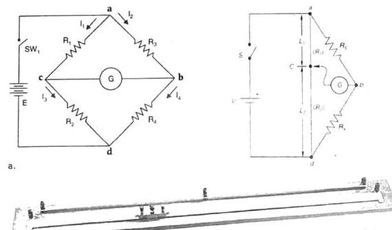
Şekil 5
Şekil 5.b’de gösterildiği gibi, direnç ölçümü için R₁ ve R₂ dirençleri, C kontağının tel boyunca kaydırılmasıyla değiştirilir. Değişken direnç, galvanometre sıfırı okuyana kadar ayarlanır. Bu durumda köprü dengeli kabul edilir ve bilinmeyen direnç (Rx) şu formülle hesaplanır:
Direnç telinin uzunluğu direnç değeri ile orantılı olduğu için direnç oranı uzunlukların oranı ile eşdeğer kabul edilebilir.
Bu durumda bilinmeyen direnç değeri:
Deneyin Yapılışı (4. Bölüm)
Malzemeler: Galvanometre (50-100 µAmetre), Değeri bilinen bir Direnç - Rs (100 Ω - 1 kΩ), Tel direnç (Krom-Nikel).
- Şekil 5.b’da verilen devre için gerekli malzemeleri hazırlayın, özelliklerini belirleyin.
- Devrenin kurulumunu yapın, kontrol ettikten sonra Güç kaynağının değerini en az
10 Vseviyesine kadar artırın. - Köprü üzerindeki hareketli kayan sürgü ucunu hareket ettirerek Galvanometrenin sapmalarını izleyin. Sapmanın sıfır olduğu noktada akımı kesin ve bu noktayı işaretleyin.
- Şerit metre ile
L₁VeL₂uzunluklarını ölçünüz. - Ölçtüğünüz değerleri verilen formülde yerine koyarak bilinmeyen direnç değerini hesaplayın. Şerit metrede hata miktarını
0,5 mmalarak direncin toplam hatasını hesaplayın. Direnç ölçümünün sonucunu ifade edin.
Deney 3: Alternatif akımda Akım, Gerilim, Güç, Cosф ve Enerji Ölçümü
Deneyin Amacı: Alternatif akım devrelerinde Analog Ampermetre, Voltmetre, Wattmetre, Cosφmetre ve Enerji sayacının bağlantılarını ve ölçmelerini öğrenmek.
Akım, Gerilim, Güç, Cosф ve Enerji Ölçümü Ön Bilgi
Çok sayıdaki avantajları nedeniyle elektrik sistemlerinde Alternatif Akım (AC) kullanılır. Alternatif akım, santraldeki alternatörün dairesel dönme hareketi sonucu 50 Hz frekansında ve sinüs dalga şeklinde elde edilir. Üretilen elektrik enerjisinin uzak yerlere iletimi ve dağıtımında transformatörler kullanılır. Ev ve iş yerlerinde kullandığımız elektrik enerjisinin genliği 220 volttur.
Alternatif Akımda Ani, Ortalama, Maksimum ve Etkin Değerler
AC devrelerinde akım ve gerilim zamana bağlı olarak (anlık) değişmektedir. Alternatif akımın, zamanın herhangi bir anındaki değerine ani değer denir. Akım veya Gerilimin ani değeri V(t) = Vm * Sinθ şeklinde verilir.
Infobox
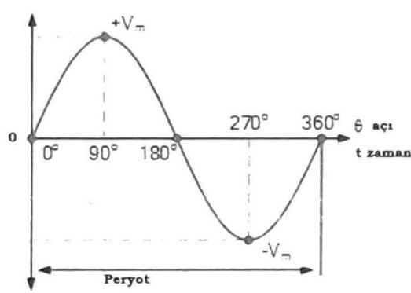
Şekil 1: Alternatif akımın sinüsoydal değişimi, ani, ortalama ve etkin değerler
- Ortalama değer: Herhangi bir
u(t)fonksiyonunun bir periyottaki ani değerlerinin ortalamasıdır. Saf sinüsoydal AC’de ortalama değer sıfırdır, çünkü pozitif ve negatif ani değerler birbirini götürür. - Etkin (Efektif) Değer (RMS): Alternatif gerilimin en büyük değeri veya genliği, sinüs sinyalinin yukarıda tanımlanmış periyot süresi içerisinde aldığı en büyük değeri belirtir.
220 V’luk şebeke gerilimi için tepe değeri yaklaşık311 V’tur. Efektif değer, anma değeri olarak kullanılır.
Alternatif akım devresinde endüktif yükler fazla olduğunda devre akımı toplam karmaşık direncin belirlediği bir açıda geri kalarak faz farkı oluşturacaktır. Faz farkı, iki ya da daha çok sinyalin birbirinden ileride ya da geride olduğu belirtilen ve bu farkın Açı (radyan) veya zaman birimi olarak ifade edildiği durumdur. Devrede kapasitif dirençler ağırlıklı olduğunda ise bu defa akım belirli bir açıda gerilimden önde olacaktır.
Infobox
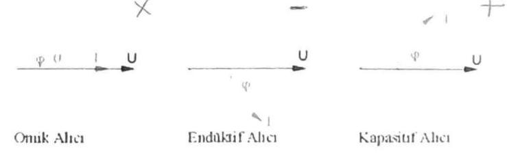
Şekil 2: Alternatif akımda alıcıların akım ve gerilim vektörleri ile faz farkı
- Endüktif reaktans (
XL): Alternatif akımda saf bobinin oluşturduğu dirence denir. BirimiΩ’dur. Tamamen endüktif bir yükte, AC’de, devre gerilimi ile akımı arasında90°fark meydana gelir (Şekil 3).
Infobox
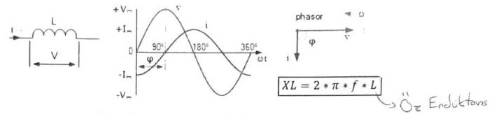
Şekil 3: Saf Bobinin oluşturduğu faz farkı ve direnci
Pratikte bobin iç omik direnci olması nedeniyle karmaşık yük olarak kendini gösterir. Karmaşık yüklerde RL ve C yük bileşenleri bulunabilir. Asenkron Motorlar, Elektromıknatıslar, Transformatörler endüktif yük bileşeni olan alıcılardır. Kondansatör içeren cihazlar (PC, TV) ise kapasitif bileşenli alıcılardır. R-L devresinde I akımı, V geriliminden φ (>90°) faz açısı kadar geridedir. Toplam dirence endüktif empedans veya “Z” empedansı denir. Alternatif gerilim devrelerinde Ohm Kanunu için bu empedans değeri kullanılır (Şekil 4).
Infobox
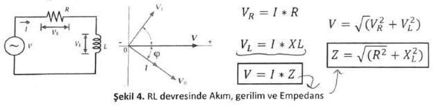
Şekil 4: RL devresinde Akım, gerilim ve Empedans
Alternatif akımda Güç Ve Enerji
AC devrelerinde akım ve gerilim zamana bağlı olarak değiştiğinden, güç de zamanın bir fonksiyonu olarak pozitif ve negatif değerler alabilir. Buna ani güç denir (Şekil 5). Pozitif güç değerleri kaynaktan devreye güç akışını, negatif güç değerleri ise devreden kaynağa güç akışını ifade eder.
AC devrede ani güç: P(t) = V(t) x I(t)
Infobox
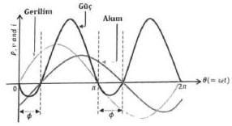
Şekil 5: AC de RL devresinde Akım, Gerilim ve Güç Değişimi
Dirençli (omik) devrelerde faz farkı sıfır (φ = 0) olduğu için akım ve gerilim birlikte pozitif ve negatif değerler almaktadır. Dolayısıyla anlık güç her zaman pozitiftir. Bu, dirençli devrelerde güç akışının sürekli kaynaktan yüke doğru olduğu anlamına gelir. Direnç enerjiyi depolayamaz, sürekli olarak ısı ve ışık şeklinde harcar.
R-L-C devre elemanlarından oluşmuş bir AC devresi, sinüzoidal sürekli halde Z empedansı ile ifade edilir. Devre empedansının iki bileşeni (R, X) olduğu için buna bağlı olarak toplam gücün de iki bileşeni bulunur:
- Aktif güç (P): Direnç elemanına ait olan ve toplam gücün reel bileşenini oluşturan kısım. Kaynaktan çekilen toplam gücün devredeki direnç elemanları tarafından harcanan kısmı. Aktif güç Wattmetre ile ölçülür.
- Reaktif güç (Q): Bobin/kondansatör elemanlarına ait olan ve toplam gücün sanal bileşenini oluşturan kısım. Sadece depo edilir ve tekrar kaynağa gönderilir. Reaktif güç Var metre ile ölçülür.
- Görünür güç (S): Her iki gücün toplamı olan devrenin gücü. Kaynak gerilimi ile toplam devre akımının etkin değerlerinin çarpımına denir.
Güç Üçgeni ilişkileri:
Wattmetre ve Cosφmetre
- Wattmetre: Elektrik devrelerinde alıcının harcadığı aktif gücü ölçmek için kullanılır. Sabit akım bobinleri (seri bağlı) ve hareketli gerilim bobinleri (paralel bağlı) bulunur. Akım bobini az sarımlı kalın kesitli, gerilim bobini ise çok sarımlı ince kesitlidir.
Infobox
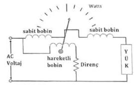
Şekil 6: Elektrodinamik Wattmetre
- Cosφmetre: Hattaki akım ve gerilim arasındaki faz farkını (cosφ) ölçmek için kullanılır.
Elektrik Enerjisi: Belirli bir güçteki alıcının belirli bir sürede harcadığı işi ifade eder. Kullanılan elektrik enerjisi, elektrik sayaçları ile ölçülür. Birimi kilowatt-saat (kWh)‘tir.
Analog elektrik enerji sayacı genelde indüksiyon yöntemine göre çalışır. Harcanan enerji ile orantılı olarak bir diskin dönmesi ile numaratöre ekleme yapılarak ölçüm sağlanır.
Infobox
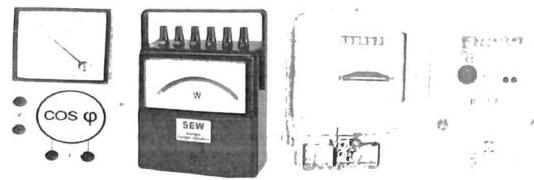
Şekil 7: Deneyde kullanılan Ölçü Aletleri
Bir kWh’lik enerji için diskin kaç devir yapması gerektiği sayaçların etiketinde yazılıdır. Örneğin, 1200 devir/kWh yazılı ise diskin her 1200 devri için harcanan elektrik enerjisi 1 kWh olur.
Örnek: Gücü bilinmeyen bir alıcı, etiketinde 1200 devir/kWh yazılı olan sayaca dakikada 6 devir yaptırmaktadır. Alıcının gücü kaç wattır?
1 kW’lık alıcı bu sayaca saatte 1200 devir yaptırdığına göre, diskin dakikada yapması gereken devir sayısı 1200 / 60 = 20’dir. Eğer 1000 W’lık bir alıcı 1 dakikada 20 devir yaptırırsa, X watt’lık alıcı aynı sayaca 1 dakikada 6 devir yaptırır.
Elektronik veya Dijital Sayaçlar: Genellikle tarifeli (zaman dilimlerine göre ücretlendirme yapan) elektrik sayaçlarıdır.
Infobox
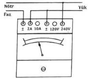
Analog Wattmetre
Infobox
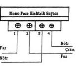
Analog ve Dijital Enerji Sayacı
Şekil 8: Kullanılan Ölçü aletlerine ait bağlantılar
Deney Öncesi çalışma:
- İç direnci
100 Ωolan bir bobinin öz indüktans katsayısıL = 1 H’dir. Bu bobine50 Hz,100 Vuygulandığında devreden geçecek akımı ve oluşacak faz farkını hesaplayın.
Deney Çalışması:
BÖLÜM-1: Alternatif akımda Güç Ölçmeleri
Infobox
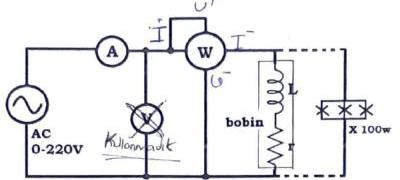
- Şekil’deki devre bileşenleri seçilir. İlk olarak sadece omik yükler (flamanlı lambalar) için devre kurulur. Varyak gerilimi sıfırdan itibaren artırılarak
150 Voltve220 Voltdeğerleri için akım, gerilim ve güç değerleri okunarak Tablo 1’e kaydedilir. (Kademelere ait çarpan değerlerine dikkat edin) - Ölçülen Güç ile hesaplanan güçler karşılaştırılır, sonuç yorumlanır.
Tablo 1: Güç ölçüm sonuçları
| Varyak Gerilimi | Lamba (W) | Gerilim(V) | Akım(A) | Güç (W) | Hesaplanan Güç (W) |
|---|---|---|---|---|---|
| 150 Volt | 100 | 150 V | 0.15 A | 2.0 W | 20.5 W |
| 220 Volt | 100 | 220 V | 0.15 A | 32.5 W | 39.6 W |
| 150 Volt | 250 | 250 V | 0.16 A | 35 W | 34 W |
| 220 Volt | 250 | 220 V | 0.16 A | 90 W | 96.8 W |
| YORUM: |
- Şekil’deki devreye göre bu defa belirli bir iç dirence sahip
1 Hdeğeri civarındaki tek bir bobin yük olarak bağlanır ve varyak220 Viken ölçü aletlerindeki değerler okunarak Tablo 2’ye kaydedilir. - Ölçülen değerlerden Cosφ değeri hesaplanır.
- Şekil’deki devreye göre bu defa 1 ve 3. maddeler için kullanılan bobin ve lambalar bağlanır. Varyak
220 Viken ölçü aletlerindeki değerler okunarak Tablo 2’ye kaydedilir. - Ölçülen değerlerden Cosφ değerini hesaplayın.
- Alıcıların görünür ve reaktif güçlerini hesaplayınız.
Tablo 2: Bobin ve Lamba ile güç ölçüm sonuçları
| Varyak Gerilimi | Bobin (L ve r) | Lamba(W) | Gerilim(V) | Akım(A) | Güç (W) | Hesaplanan Cosφ (W) |
|---|---|---|---|---|---|---|
| 100 Volt | 0.16 H 72 A 0 | 100 V | 0.17 | 8 | 0.216 W | |
| 220 Volt | 0.16 H 72 A 0 | 216 | 0.179 | 40 | 0.23 | |
| 220 Volt | 0.16 H 72 A 100-250W | 214 | 0.158 | 130 W | 0.602 | |
| YORUM: |
BÖLÜM 2: Alternatif akımda Faz farkı Ölçmeleri
Infobox
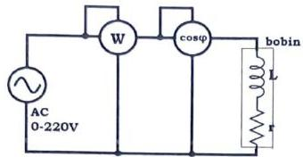
- Şekil’deki devre kurulur. Varyak gerilimi sıfırdan itibaren artırılarak
150 Voltve220 Voltdeğerleri için akım gerilim ve güç değerleri okunarak Tablo 3’e kaydedilir. - Elde edilen sonuçlar Tablo 2 ile karşılaştırılır ve yorumlanır.
Tablo 3: Faz farkı ölçüm sonuçları
| Varyak Gerilimi | Bobin (L ve r) | Lamba(W) | Güç (W) | Cosφ (W) |
|---|---|---|---|---|
| 100 Volt | 0 | |||
| 220 Volt | 0 | |||
| 220 Volt | 100-250W |
BÖLÜM 3: Alternatif akımda Enerji Ölçmeleri
- Aşağıda verilen Şekil’deki devre kurulur. Varyak gerilimi sıfırdan itibaren
220 Voltdeğerlerine kadar artırılır. Sayaç dik ve yatık konumlardaki hareketi gözlenir. - Sayaç diskinin
tdakika süresinde dönme sayısınolursa sayacın etiketinde yazılı devir adedi/kWh=kdeğerine göre sayaçtan geçen enerji (kWh olarak)W = P · t = (n/k) · 60olarak hesaplanabilir. Deneyde aldığınız alıcının çalışma süresi ve sayaç diskinin dönme adedi değerleri ile sarf edilen enerjiyi hesaplayınız. Sayacın kaydettiği değerle karşılaştırınız. - Sayaç ile güç ölçümü nasıl yapılabilir, tartışınız.
Infobox
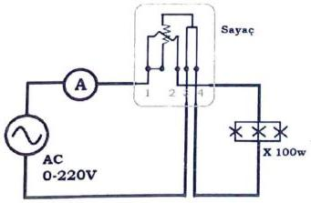
DENEY No 4: Osiloskop ve Alternatif Akım Dalga Şekillerinin incelenmesi. Genlik, Frekans ve faz farkı Ölçümleri, Ortalama ve Etkin Değerler
Genel Bakış:
Osiloskop, bir sinyalin iki boyutlu görsel sunumunu sağlayan elektronik bir ölçüm cihazıdır. Osiloskop ile periyodik sinyaller görüntülenir ve ölçülebilir. Osiloskop, genlik-zaman ve genlik-genlik (Lissajous eğrileri) görüntüleri ile sinyallerin ayrıntılı incelemeleri yapılır. Sinyallerin birbirlerine karşı durumları gözlemlenebilir. Bir noktadaki voltajın zamana göre değişim grafiği, dikey eksen voltaj ve yatay eksen zaman olmak üzere elde edilir. Osiloskop elektrik devre bileşenlerine voltmetre gibi paralel bağlanır.
Osiloskop üzerinde genel olarak dört ana kontrol grubu vardır:
- Ekran Görüntüleme
- Dikey grup
- Yatay grup
- Tetik grup
Infobox
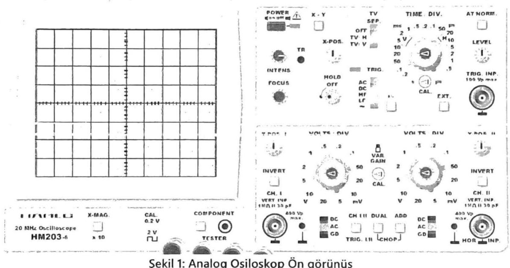
Şekil 1: Analog Osiloskop Ön görünüş
Ekran Görüntüleme Grubu
Sinyali en iyi şekilde görüntüleyen, Görüntüleme ekranı, yoğunluk kontrol düğmesi, ışın bulma düğmesi, odak kontrol düğmesi ve güç anahtarından oluşur.
- Görüntü ekranı: Genellikle
8x10 cm’lik bir ızgaraya yerleştirilmiştir. Osiloskop, katot ışını tüpünün (CRT) içindeki fosfor kaplama boyunca bir elektron ışını hareket ettirerek girişine gelen sinyalin grafiğini çizer. - Yoğunluk kontrol düğmesi: Işığın parlaklığını ayarlamak ve bulanıklığı gidermek için kullanılır.
- Işın bulma düğmesi: Elektron demetinin ekran dışında olduğunda, ekrana getirmeyi sağlar.
- Odak kontrol düğmesi: Optimum iz çözünürlüğü için elektron ışınını ayarlar.
Dikey Grup
Dikey bileşenleri (Y ekseni) ve sinyalin dikey konumunu ayarlamak için kullanılır. Bu grup, dikey konum düğmeleri, kanal seçme anahtarı, bölüm başına volt seçici düğmeleri, giriş bağlantı anahtarı, kanal modu seçici anahtarı, kanal 2 çevirme anahtarı ve BNC konektörlerinden oluşur.
- Dikey konum kontrolleri: Bir kanalın veya diğerinin izini dikey olarak hareket ettirmek için kullanılır.
- “CH1 / DUAL / CH2” etiketli kanal seçme anahtarı: Ekranda hangi kanalların görüntüleneceğini seçer.
- Bölüm başına volt seçici düğmesi: Her kanalın izi için dikey ölçeği volt veya milivolt olarak ayarlar.
- “AC / GND / DC” etiketli giriş kuplaj anahtarı: O kanalın ekranının kuplaj modunu seçer.
- AC: Sinyalin yalnızca değişen kısmının görüntülendiği anlamına gelir.
- DC: Sinyalin hem değişen kısmını hem de herhangi bir DC bileşenini gösterecektir.
- GND:
0 Vreferans seviyesini gösterir.
- “ADD / ALT / CHOP” etiketli kanal modu seçme anahtarı: Yalnızca kanal seçici anahtarında DUAL seçildiğinde etkinleştirilir.
ADD, Kanal 1 sinyalini Kanal 2 sinyaline grafik olarak ekler.
Yatay Kontrol Grubu
Kaba ve ince konum düğmeleri, yatay büyütme anahtarı, bölüm başına saniye seçici düğmesi ve büyütme ölçeği seçici anahtarından oluşur.
- Kaba ve ince konum düğmeleri: İzlerin sırasıyla kaba ve hassas bir şekilde yatay hareketine izin verir.
- Yatay büyütme anahtarı (“X1 / ALT / MAG”): Normal (
X1) ve/veya yatay olarak büyütülmüş bir izi seçer. - Bölme başına saniye düğmesi: Zaman tabanı (yatay) ölçeğini ayarlar. Saniye, milisaniye ve mikrosaniye olarak işaretlenir. Not: Her iki kanal için yalnızca bir yatay ölçek vardır.
Tetik Grubu:
Bir sinyali görüntülemek için, osiloskop bu sinyale “kilitlenebilmelidir”; tetikleme kontrollerinin işlevi tam da bunu yapmaktır. Tetikleme karmaşık bir konu olabilir ve bu laboratuvarın kapsamı dışındadır.
Osiloskopta Yapılacak Ölçmeler:
Önce sinyalin kanalını (CH1) seçin. Yatay çizginin seviyesini tam ortaya (orjin) getirin.
- Genlik Ölçümü (dikeyde voltaj):
Sinyal olarak
2 Vdoğru gerilim uygulandığında Şekil 2.a’de gösterilen sinyal görüntüsü elde edilecektir. Sinüsoydal bir sinyal uygulandığında (Şekil 2.b) sıfırdan itibaren dikey olarak kaç çizgi ve kaç ince iz (bu bölümler çentik işaretleriyle1/5’e (0,2) bölünmüştür.) olduğu sayılır. Bu sayı kanalın volt / div çarpanı ile çarpılarak sinyalin tepe değeri elde edilir. - Dönem (yatay eksende zaman):
Sinyalin herhangi bir noktasını referans olarak alın, bunun için çoğunlukla sıfır veya tepe noktaları seçilir. Yatay çizgi boyunca aynı yöndeki bir sonraki geçişe kadar olan bölümlerin sayısını sayın. Sec / div ayarıyla tam bölme ve çentik sayısını çarparak sinyalin periyodunu (dönem) hesaplayın. Şekil 2.b’de sinyal 2 tam bölmeden meydana gelmektedir. Timebase çarpanı ise
10 msdir. Şu halde peryodu20 ms. dir. - Sıklık (Frekans):
Sinyalin periyodunu (
T) ölçün.F = 1 / Tkullanarak frekansı (f) hesaplayın. (f = 1 / 20 ms = 50 Hz)
Infobox
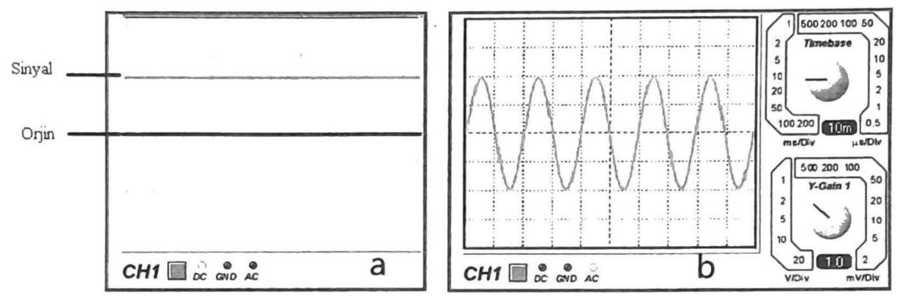
Şekil 2: Osiloskopta Genlik, periyot ve frekans ölçümü
Alternatif akım ve Periyodik Sinyaller
Alternatif akım, zamana göre pozitif ve negatif değerler alan sinyallerdir. Periyodik işaretler belli zaman aralığında aynı değeri alan işaretlerdir. Sinüzoidal dalga, kosinüs dalgası, üçgen dalga ve kare dalga periyodik sinyale örnektir. Sinüzoidal işaret maksimum genliği, açısal frekansı (periyod veya frekansı ile de olabilir) ve sahip olduğu faz kayması ile karakterize edilebilir.
V(t), Anlık Değer: Alternatif akım ve gerilimin herhangi bir andaki değeridir.v₁(t) = Vm · Sin(wt + θ)Vm, Maksimum (Tepe) Değer: Alternatif akımın anlık değerleri içindeki en büyük değeridir.Vort, Ortalama Değer: Bir periyottaki ani değerlerin ortalamasıdır. Ortalama değer, sinyalin doğru akım değeridir. Saf alternatif akımın ortalama değeri sıfırdır.- “
Vortalama = (1/T) ∫(-T/2)ᵗ/² v(t) dt” - Doğru akım ölçü aletleri sinyalin DC bileşenini ölçerler.
- “
Infobox
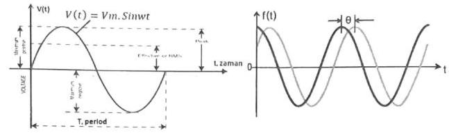
Şekil 3: a. Sinüsoydal sinyalin karakteristik değerleri b. iki sinyalin faz farkı
Veff.(V), Etkin (Efektif) Değer (RMS): Alternatif akımın bir dirençte, doğru akımla eş değerde etki yaptığı değerine etkin veya efektif değer denir. Ülkemizdeki elektrik şebekesinin efektif gerilim değeri220 volttur. AC ampermetre ve voltmetre, akımın ve gerilimin etkin değerini (RMS) gösterirler. Bir işaretin karesinin bir periyot boyunca alınan ortalamasının karekökü olarak tanımlanır.- “
Veffektif = √( (1/T) ∫(-T/2)ᵗ/² v(t)² dt )” - Tam sinüs dalga şekli için:
Veff = (1/√2) * Vm = 0,707 Vm
- “
- Şekil Katsayısı (SK): Etkin değerin ortalama değere oranıdır.
- “
SK = Veff / Vort”
- “
DENEYİN YAPILIŞI:
Kullanılacak Malzemeler: Sinyal jeneratörü, DC güç kaynağı, Direnç kutusu, Analog osiloskop, multimetre, kondansatör, bağlantı elemanları.
- Aşağıda verilen deney şemasına göre bağlantıyı gerçekleştiriniz.
Infobox
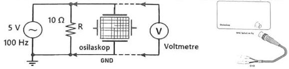
Şekil 5: Deney şeması
- Sinyal jeneratörünü
100 Hz - 1 kHzaralığında sinüs üretecek şekilde ayarlayınız. - Osiloskop ekranının yardımıyla sinyalin maksimum değerini
5 Volarak ayarlayınız. - Osiloskopun ayarlarını kullanarak ekrandaki sinyal görüntüsünü sabit ve
1-2periyotu kapsayacak şekilde elde etmeye çalışınız. Daha sonra, bu işarete ait büyüklükleri (sinyalin maksimum gerilimi, tepeden tepeye değerini, ortalama değerini, sinyalin periyodunu ölçünüz, frekansını hesaplayınız) osiloskop ekranından ve voltmetreden okuyarak kaydediniz. - Osiloskopta elde ettiğiniz görüntüyü (ek graikte size verilecek) aşağıdaki milimetrik grafik ekran (1. Grafik) üzerine yaklaşık olarak çiziniz. Verilere bakarak her bir kanalın tepe değer ve periyot değerini ölçünüz. Bu değerlerden yaralanarak etkin değer ve frekans değerleri hesaplayın ve kaydedin.
Infobox
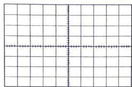
- Grafik
Infobox
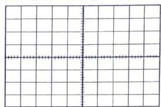
2. Grafik
- Osiloskop ve Multimetre ile ölçülen değerleri ve hesaplanan sonuçları karşılaştırınız.
- Aynı işlemleri üçgen dalga ve kare dalga için tekrar edininiz.
Ölçüm ve hesaplamalar:
| Dalga şekli | Multimetre ile ölçülen voltajlar | Osiloskopta ölçülen ve hesaplananlar | |||||
|---|---|---|---|---|---|---|---|
| Sinüs | Vort = | Veff = | Vm = | Vpp = | Veff = | T = | f = |
| Üçgen | Vort = | Veff = | Vm = | Vpp = | Veff = | T = | f = |
| Kare | Vort = | Veff = | Vm = | Vpp = | Veff = | T = | f = |
- Şekil 6’da verilen devre şemasına göre deneyin bağlantı şemasını gerçekleştiriniz.
- Sinyal jeneratörünü
100 Hz - 1 kHzaralığında sinüs üretecek şekilde ayarlayınız. - Osiloskop ekranının yardımıyla sinyalin maksimum değerini
5 Volarak ayarlayınız.
Infobox
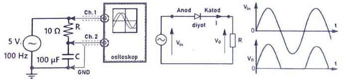
Şekil 6: Deney şeması Şekil 7: Yarım dalga doğrultucu
- Osiloskobun ayarlarını kullanarak ekrandaki sinyal görüntüsünü sabit ve
1-2periyot olacak şekilde elde etmeye çalışınız. Sonra, her iki işarete ait büyüklükleri (sinyalin tepeden tepeye değerini ve sinyalin periyodunu ölçünüz, frekansını hesaplayınız) osiloskop ekranından okuyarak kaydediniz. - Osiloskopta elde ettiğiniz görüntüyü (ekte size verilecek) aşağıdaki milimetrik grafik ekran (2. Grafik) üzerine yaklaşık olarak çiziniz. Verilere bakarak her bir kanalın tepe değer ve periyot değerini ölçünüz. Bu değerlerden yararlanarak etkin değer ve frekans değerleri hesaplayın ve kaydedin.
| Kanal | Osiloskopta ölçülen ve hesaplananlar? | |||
|---|---|---|---|---|
| 1.kanal | Vpp = | Veff = | T = | f = |
| 2.kanal | Vpp = | Veff = | T = | f = |
| Faz farkı | Δt = | θ = | (derece) |
- Sekil 7’deki devreyi kurunuz. Benzer şekilde osiloskobun iki kanalını ve voltmetreyi de devreye bağlayınız. Osilatör frekansını
1-10 kHzaralığında ve gerilimini5 Volacak şekilde ayarlayınız.
- Osiloskop ekranındaki görüntüyü şekil 7’de verilen şekle benzer olacak şekilde elde ediniz ve kaydediniz.
- Osiloskoptaki ekran görüntüsünü aşağıda verilen milimetrik kâğıda ölçekli olarak çiziniz. Yarım doğrultulmuş sinyalin ortalama ve efektif değerlerini (düzgün sinüs kabul ederek) hesaplayınız.
Infobox
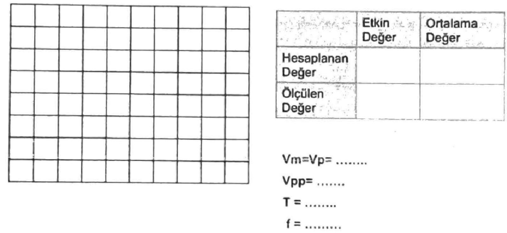
- Elde edilen sonuçlara bakarak hesaplanan ve ölçülen değerlerin karşılaştırmasını yapın ve yorumlayın. Sonuçlar uyumlu değilse hata araştırması yapın ve deneyi tekrarlayın. Sonuçlar uyumlu ise bu sinyal için Şekil Katsayısı (ŞK)‘nı hesaplayın.
Infobox
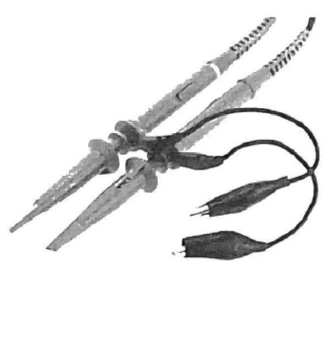
Osiloskop Probları
Infobox
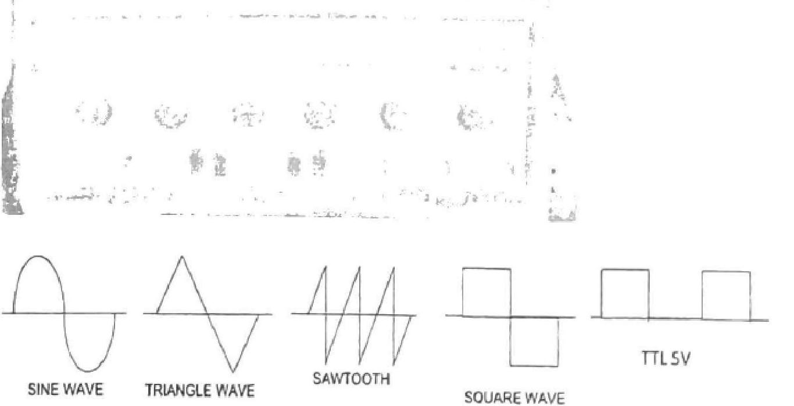
Sinyal Jeneratörü (Sinüs, üçgen ve kare üreteci)
DENEY No 5: Direnç Renk Kodları, Deney Tahtası, CADET Deney Seti ve Multimetre Kullanımı
GİRİŞ
Elektronik devrelerde kullanılan direnç, kondansatör ve bobin gibi devre bileşenlerinin değerleri renk kodlaması ile belirlenir. Bileşenlerin yüzey alanlarının küçük olması veya üzerlerindeki yazıların silinebilmesi gibi nedenlerle bu yöntem tercih edilir. Dirençlerde genellikle 4 ve 5 bantlı kodlama kullanılır. Kondansatör ve bobinler için de kendilerine ait renk kodlamaları mevcuttur.
Deney Tahtası (Breadboard)
Bir devreyi deney tahtasında geliştirmek, maliyeti ve süreyi önemli ölçüde azaltabilir. Geleneksel baskılı devre kartı (PCB) üretim süreçleri zaman alıcı ve maliyetli olabilirken, deney tahtası lehimleme gerektirmediğinden devrelerin hızlı kurulup denenmesini ve eleman değerlerinin kolayca değiştirilebilmesini sağlar. Geçici olarak oluşturulan ve tekrar tekrar kullanılabilir bir platformdur.
Infobox
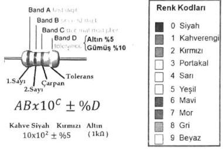
Deney Tahtası (Breadboard)
Deney tahtası, üzerinde ızgara şeklinde alttan birbirine bağlı ve üstten delikler olarak görülen birleşme noktalarına sahiptir. Elektrik telleri ve devre bileşen uçları bu deliklere yerleştirilerek bağlantılar yapılır. Besleme ve nötr noktaları genellikle tahtanın kenarlarında bulunur. Bağlantılar mümkün olduğunca az ve kısa kablolarla yapılmalı, devrenin şematik yapısına benzer şekilde düzenlenmelidir.
Infobox
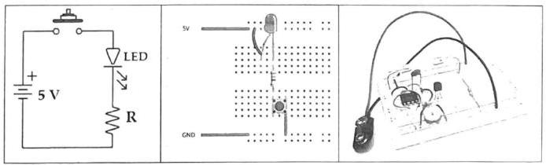
CADET Analog-Dijital Devre Eğitim Seti
CADET Eğitim Seti, Fonksiyon Jeneratörü, DC gerilim kaynakları ile birçok yardımcı ekipmanı ve deney tahtasını birlikte sunan güvenli ve kolay kullanım imkanı sağlayan bir tasarım aracıdır. Temel seviye analog elektrik ve elektronik deneyleri için tasarlanmıştır.
- Özellikleri: Genliği ve frekansı ayarlanabilen sinüs, üçgen ve kare dalga sinyal jeneratörü, buton kontrollü
5V TTLkare sinyali,+5 Vsabit,±0-12 Vayarlı DC gerilim kaynağı, bağımsız12 V ACtrafo çıkışı, ayarlı dirençler (pot), BNC soketi ile osiloskop bağlantısı, anahtarlar ve gösterge ledleri gibi yardımcı ekipmanları içerir.
Infobox
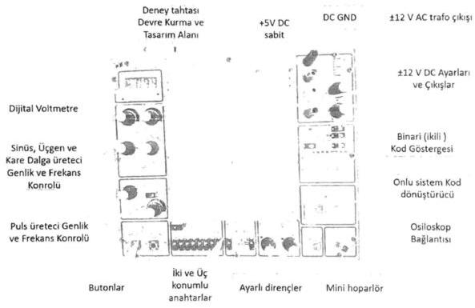
Dijital Multimetre
Multimetre, voltmetre, ampermetre ve ohmmetre gibi ölçü aletlerinin bir araya getirilmesi ve çeşitli fonksiyonların eklenmesiyle oluşturulmuş komple bir ölçü aletidir (“çoklu ölçer”). Sahada çok faydalı ve olmazsa olmaz bir cihazdır.
- Fonksiyonlar:
LCDekranı sayesinde kolayca okunabilen değerler sunar. Bazı multimetrelerle frekans, transistör kazancı, sıcaklık ölçümü yapılabilir ve diyot, transistör kontrolü sağlanabilir. - Kullanım: Cihazın ortasındaki konum komütatörü ile akım, gerilim, direnç, AC-DC vb. ölçüm modları seçilir.
Infobox
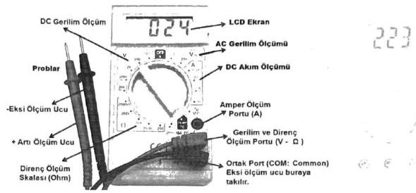
Multimetre ile direnç ölçmek
Multimetre ile direnç ölçümünde, devrede enerji yokken veya devre elemanını bağımsız olarak ele alındığında ölçüm yapılır (Direnç uçlarına elle temas edilmemelidir). Problar şekilde verildiği gibi yerleştirilir ve komütatör Ohm moduna getirilir. Sonra şekilde gösterildiği gibi direncin iki ucuna prob uçlarına temas ettirilerek sonuç ekrandan okunur.
Infobox
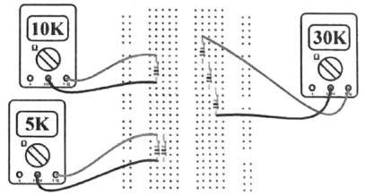
Multimetre ile voltaj ölçümü
Problar şekildeki gibi yerleştirildikten sonra komütatör ile multimetre üzerindeki “V” (voltaj) yazan bölüm AC veya DC voltajı durumuna göre seçilir. Devrede enerji varken, problar direnç veya voltaj kaynağına paralel bağlanarak ölçülen değer ekrandan okunur.
Voltaj kademesi yüksekten aşağıya doğru kademeli olarak indirilerek ölçmedeki bağıl hata oranı azaltılmalıdır.
Infobox

Multimetre ile akım ölçmek
Multimetrede akım ölçümü özel bir dikkat gerektirir. Zira akım ölçme modunda iken düzenleme yapılmadan gerilim ölçme girişiminde, akım kademesi zarar görebilir. Akım ölçümü için probların yerleşimi önemlidir. mA ve A seviyelerine göre problar multimetreye bağlanır ve komütatörde “A” (amper) modu seçilir. Multimetre, seri bir devre elemanı olarak devreye bağlanır. Bundan sonra Multimetre açık (ON) hale getirilir (açık olmazsa devreden akım geçmeyecektir).
Deney öncesi çalışma:
- Her grup bir multimetre araştırması yapsın ve Laboratuvara gelirken seçtikleri bir multimetreye ait teknik özellikleri gösteren bir yazıcı çıktısı getirsin. (her grubun farklı getirmesi beklenir)
Deney Çalışmaları:
- Size verilen direnç kutusundan renk kodlarına bakarak Şekilde verilen dirençleri seçiniz veya onların yerine rastgele dirençler seçiniz.
Rabdeğerini hesaplayınız. Her birisini ölçerek tolerans bölgelerinde olduğunu kontrol ediniz. Devreyi breadboard üzerine kurunuz vea-barasındaki eşdeğer direnci ölçünüz. Ölçtüğünüz ve hesapladığınız değerleri tabloya yazınız. Dirençlerin renk kodu ile verilen toleransı ile ölçtüğünüz değerlerin toleransını karşılaştırınız. Sonuçları yorumlayınız.
Infobox
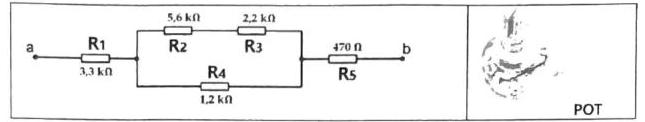
| R anma değeri | R1 | R2 | R3 | R4 | R5 | Rab = |
|---|---|---|---|---|---|---|
| Ölçülen değer-R |
- Size verilen bir potansiyometrenin uçlarındaki dirençlerin değişimini görün ve ölçerek orta noktasını bulun.
- Şekildeki devreye (
a-buçları arasına)+12 V DCgerilim verilerek, devrenin toplam akımı ve her bir dirençteki gerilim değerleri ölçülecektir. Devre şemasını çizin. Ölçüm için size verilen multimetreyi her defasında bir ölçme yapacak şekilde ölçümleri yapın ve ölçüm sonuçlarını tablo halinde kaydedin.
| R değeri | R1 | R2 | R3 | R4 | R5 | Ölçülen lab | Hesaplanan lab |
|---|---|---|---|---|---|---|---|
| Ölçülen Voltaj |
- Her bir dirençten geçen akımı hesaplayın ve toplam akımı bulun. Ölçtüğünüz devre akımı ile hesap yoluyla bulduğunuz devre akımını karşılaştırın. Sonucu yorumlayın.
- Her bir direnç üzerindeki voltajı okuyun ve toplam voltajı bulun. Devreye uygulanan voltajla karşılaştırın. Sonucu yorumlayın.
- Şekildeki devrenin
aucuna+12 Vvebucuna-5 Vuygulayarak 3., 4. ve 5. maddelerdeki işlemleri tekrarlayın, sonuçlarını kaydedin.
| R değeri | R1 | R2 | R3 | R4 | R5 | Ölçülen lab | Hesaplanan lab |
|---|---|---|---|---|---|---|---|
| Ölçülen Voltaj |
- CADET’in sinüs sinyal noktası osiloskobun 1. kanalına ve potansiyometrenin bir ucuna; potansiyometrenin orta ucu osiloskobun 2. kanalına ve potansiyometrenin diğer ucu CADET’in GND noktasına bağlanacaktır. Tam devresini çiziniz. Devreyi kurup kontrol ettirdikten sonra enerji verin. Osiloskopta her iki kanaldaki sinyalleri inceleyin. Pot değerini değiştirerek sinyal değişimini gözlemleyin. Ekrandaki görüntüyü (her iki kanalı) kaydedin ve yaklaşık olarak elle çizin.
- Potun son durumu için 2. Kanaldaki genlik değerinden yola çıkarak potun çıkış direncini hesaplayın. Devrenin enerjisini kesin ve multimetre ile potun çıkış direncini ölçün ve sonuçları karşılaştırın ve buraya kaydedin.
- CADET üzerindeki mini hoparlör, trafo çıkışları (
AC 12V - 50 Hz), anahtar ve ikili kod led göstergelerin nasıl kullanılabileceğini aranızda konuşun. CADET’in üzerindeki bileşenler kullanarak denemeler yapın.
DENEY NO: 6.1 Elektromıknatısın demiri çekmesi ve çekme kuvvetinin hesabı
DENEYİN AMACI: Elektrik akımının manyetik tesirinin deneyle gösterilmesi. Elektromıknatısla manyetik malzemelere uygulanan çekme kuvvetinin deneyle belirlenmesi.
6.1. DENEY HAKKINDA TEORİK BİLGİ
İçinden akım geçen iletkenin etrafında manyetik alan meydana gelir (Şekil 6.1.a). Bu iletken, bobin şeklinde sarılacak olursa manyetik alanın şekli Şekil 6.1.b’deki gibi olur.
Infobox
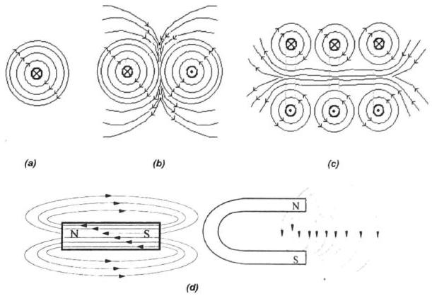
Şekil 6.1: (a) Düzgün, içinden akım geçen bir iletkenin etrafındaki manyetik alan ve akımın yönüne göre Sağ El Kuralına göre alan yönü, (b) bir sarımlı ve (c) üç sarımlı bir bobinin manyetik alanı (d) çeşitli mıknatısların etrafında meydana gelen manyetik alan çizgileri
Manyetik alan şiddeti (6.1) bağıntısı ile hesaplanabilir:
Burada;
B: Manyetik akı yoğunluğu (Wb/m²veya Tesla)μ: Manyetik geçirgenlik (permabilite)μ₀: Boşluğun manyetik geçirgenliği (12,56.10⁻⁷ H/m)μᵣ: Bağıl manyetik geçirgenlikH: Manyetik alan şiddetiN: Bobinin sarım sayısıI: Akım (A)l: Bobinin sarıldığı telin uzunluğu (m)
Bu bağıntıya göre, manyetik alan şiddetinin artırılabilmesi için, önceden hazırlanmış bir bobinde μᵣ değerinin veya I akım şiddetinin artırılması gerekir. Burada μᵣ değerini artırmak için bobinin içine yüksek geçirgenliğe sahip demir bir nüve konmuştur. İçinden akım geçen demir nüveli bir bobine “Elektromıknatıs” denir. Elektromıknatısın karşısında bulunan manyetik bir cismi çekme kuvveti, aşağıdaki formül ile hesaplanır:
Burada;
F: Çekme kuvveti (kgveya Newton)S: Elektromıknatısın çekme yüzeyi (cm²veyam²)B: Akı yoğunluğu ya da Manyetik indüksiyon (Gaussveya Tesla =V.s/m²)
6.1.1. Deneyin Bağlantı Şeması
Infobox
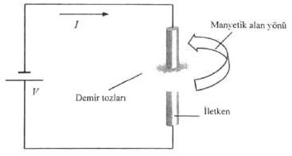
Şekil 6.2: Deneyin temel bağlantı şeması
Bu deneyde, çeşitli tiplerdeki mıknatısların etrafına serpilen demir tozlarının manyetik alan çizgileriyle uyumlu biçimde şekil aldığı gözlenecektir. Ayrıca içinden doğru akım geçirilen bir telin etrafında zayıf da olsa bir manyetik alan oluştuğu, yine demir tozları yardımıyla görülebilir. Alanı kuvvetlendirmek için telin sarım sayısını arttırmak ya da daha pratik bir biçimde tel yerine çok sarımlı bir bobin bağlamak faydalı olacaktır. Şekil 6.3’te bu bağlantı şekli görülmektedir. Bu bağlantıda oluşacak manyetik alan yönünün nasıl belirlendiğini açıklayınız.
Infobox
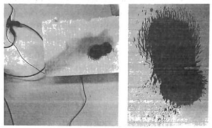
Şekil 6.3: Çok sarımlı bir bobin etrafında oluşan manyetik alan çizgilerinin demir tozları ile gösterilmesi
6.1.2. Deneyin Yapılışı
- Farklı tipteki mıknatısları demir tozunun bulunduğu yüzeyin altında hareket ettirerek demir tozlarının hareketini ve oluşturduğu manyetik alan çizgilerini gözlemleyiniz.
- Şekil 6.2’deki devreyi kurarak telin içinden akım geçiriniz. Akım değerini yavaş yavaş arttırarak manyetik alanın şeklini demir tozları serperek inceleyiniz.
- Şekil 6.2’deki devrede iletken tel yerine çok sarımlı bir bobini bağlayınız. Akım değerini yavaş yavaş arttırarak manyetik alanın şeklini demir tozları serperek inceleyiniz. Oluşan çizgileri 2. ve 3. Adım için yorumlayınız.
- Şekil 6.3’teki bağlantıyı kurarak DC gerilim kaynağının değerini yavaş yavaş arttırınız. Bu sırada yayı ve ağırlığı gözlemleyerek elektromıknatısın çekme anındaki gerilim ve akım değerlerini kaydediniz.
Infobox
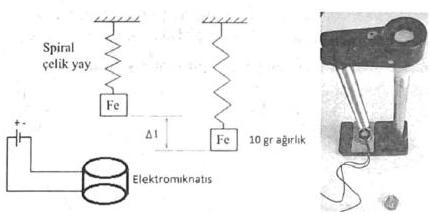
Şekil 6.3: Manyetik çekme kuvveti deney bağlantısı
- Aynı devre kuruluyken gerilim değerini yavaş yavaş azaltarak yayı gözlemleyiniz. Elektromıknatısın ağırlığı bıraktığı gerilim ve akım değerini kaydediniz.
Çekme kuvvetinin hesaplanması için aşağıda verilen değerleri kullanınız. Akım şiddetine göre yaylara uygulanan manyetik alanın çekme kuvveti;
Burada;
c: yay sabiti (N/m)Δl: gerilme mesafesi (m)S: elektromıknatısın yüzey alanı (m²)
(6.3) formülünden B manyetik indüksiyon değerini farklı akım şiddetleri için bulunuz. Hesapladığınız tüm değerleri Tablo 6.1’e kaydediniz.
Tablo 6.1: Elektromıknatıs çekme kuvveti deney sonuçları
| Δl | c | S | B | F | I |
|---|---|---|---|---|---|
| 1 mm | 314,16 mm² | 100 gr | 1 A | ||
| 5 mm | 314,16 mm² | 10 gr | |||
| 5 mm | 314,16 mm² | 100 gr | 1 A | ||
| 10 mm | 1963,50 mm² | 10 gr | 1 A | ||
| 10 mm | 1963,50 mm² | 100 gr | 2 A |
6.1.3. Deney ile İlgili Sorular
- Düz bir iletkenin etrafında meydana gelen manyetik alan şiddetinin formülünü yazıp, manyetik alan çizgilerini şekil çizerek gösteriniz.
- Sarım sayısını arttırmak ve bobinin içine demir nüve eklemek manyetik alanı niçin kuvvetlendiriyor, açıklayınız.
- Sürekli mıknatısiyetin oluşumunu araştırınız. Sürekli mıknatısiyetin zamanla veya başka etkenlerle kaybolması mümkün müdür? Bu etkenler neler olabilir?
- Elektromıknatısın yapısını ve çalışma prensibini araştırınız.
DENEY NO: 6.2 Elektromanyetik İndüksiyon
DENEYİN AMACI: Bir bobinde gerilim indüklenebilmesi için gerekli deneyi yapıp değerlendirmek.
Deneyden önce: Faraday Kanunu ve Lenz Kanunu hakkında bilgi edinip geliniz.
6.2. DENEY HAKKINDA TEORİK BİLGİ
Bobinin uçlarında indüklenen gerilim aşağıdaki eşitlik ile bulunur:
Burada;
E: İndüklenen gerilim (V)N: Bobinin sarım sayısıΦ: Manyetik akı (bobinin içinden geçen toplam akı) (Wb)t: Zaman (s)
Çeşitli gerilim indükleme yöntemlerinde bu çarpanların bazıları sabit tutulur iken bazıları değişken yapılır.
Şekil 6.4’te N sarımlı bobine daimi mıknatısın yaklaştırılması ile bobinin sargılarını kesen manyetik akı değiştiğinden durmakta olan bobinde gerilim indüklenir. Mıknatısın uzaklaştırılması ile bobinden geçen indüksiyon akımının yönü değişir.
Infobox
Şekil 6.4: Manyetik alanın değişiminin indüksiyon akımı oluşturması
Infobox
Şekil 6.5: İç içe geçmiş bobinlerde indüklenen gerilim
Herhangi bir hareket olmaksızın, Şekil 6.5’teki gibi iç içe geçirilmiş primer bobine doğru gerilim uygulandığında, ikinci bobinde gerilim indüklenmez; fakat sadece anahtarlama (açma/kapama) anlarında akımın artışı ve azalışı sebebiyle bobindeki manyetik akı artıp azalacaktır. Bu esnada ikinci bobinde geçici bir gerilim indüklenecektir. Açma ve kapama anlarında indüklenen gerilimler ise birbirine ters işarette olacaktır.
Birinci bobine alternatif gerilim uygulandığında ikinci bobinde gerilim indüklenecektir. İkinci bobindeki gerilimin genliği bobinlerin sarım sayılarının oranlarıyla değişmektedir.
Burada;
V₁: Birinci bobine uygulanan gerilim (V)V₂: İkinci bobinde indüklenen gerilim (V)f: Uygulanan gerilimin frekansı (Hz)Φm: Manyetik akının maksimum değeriN₁: Birinci bobinin sarım sayısıN₂: İkinci bobinin sarım sayısı
6.2.1. Deneye Ait Bağlantı Şemaları
Infobox
Şekil 6.6: Çoklu çıkış sarımlarına sahip transformatör
6.2.2. Deneyin Yapılışı
- Şekil 6.4’teki gibi bobinin uçlarını ölçü aletine bağladıktan sonra demir parçasını bobinin içine sokup çıkartarak ölçü aletindeki değerin değişimini gözlemleyiniz.
- Şekil 6.6’da gösterilen sargılara sahip transformatörün giriş sargısına doğru gerilim uygulayınız. Çıkış sargılarında gerilim olup olmadığını ölçü aleti yardımıyla gözleyiniz.
- Girişe doğru gerilim uygulanırken güç kaynağının anahtarını açma ve kapama anında çıkış sargılarını bağladığınız ölçü aletinin ibresinin hareketini gözleyiniz.
- Tablo 6.2’de verilen değerlerdeki giriş gerilimlerini ve sarım sayılarını kullanarak çıkış uçları arasında oluşacak gerilimleri hesaplayınız ve tabloya kaydediniz.
- Şekil 6.6’daki transformatörün giriş uçları arasına Tablo 6.2’de verilen değerlerdeki alternatif gerilimleri uygulayarak çıkış sargılarındaki gerilimleri kaydediniz. 3. Adımda hesapladığınız gerilim değerleriyle karşılaştırınız. Fark varsa sebebini yorumlayınız.
Tablo 6.2: Transformatör gerilim/sarım oranı deney sonuçları
| V₁ | V₂ | N₁ / N₂ | |||
|---|---|---|---|---|---|
| 110 V | 6,12,24,48,110 | ||||
| 100 V | 6,12,24,48,110 | ||||
| 80 V | 6,12,24,48,110 | ||||
| 60 V | 6,12,24,48,110 | ||||
| 50 V | 6,12,24,48,110 |
6.2.3. Deney ile İlgili Sorular
-
- aşamada gerçekleştirilen deneyde demir parçasının bobine yaklaşırken ve uzaklaşırken ölçü aletinin ibresinin ters yönlerde hareket etmesinin nedenini açıklayınız.
- Transformatöre doğru gerilim uygulandığında çıkış sargısında herhangi bir gerilim olmayışının nedenini açıklayınız.
-
- adımda gözlenen durumu yorumlayınız.
- Şekil 6.4’te indüklenen gerilimin değeri hangi faktörlere göre artar veya azalır?
- Transformasyon geriliminden yararlanarak çalışan hangi elektrik makinelerini biliyorsunuz?
- Primer (birincil) sarım sayısı
N₁ = 150sarım, sekonder (ikincil) sarım sayısıN₂ = 300sarım, demir nüve kesiti10 cm²olan bir transformatörde primer gerilimi110 V, sekonder akımı10 A’dır. Frekans50 Hziçin sekonder gerilimini, primer akımını ve demir nüvedeki manyetik indüksiyonu bulunuz (verim%100alınacaktır,μᵣ = 3).
Temel Formüller ve Hızlı Bilgiler
Temel Elektrik Formülleri
Ohm Kanunu: Gerilim, Akım ve Direnç arasındaki ilişkiyi gösterir.
V = I * R
V: Gerilim (Volt)I: Akım (Amper)R: Direnç (Ohm)Elektriksel Güç: Bir devrede harcanan veya üretilen gücü ifade eder.
P = V * I
P: Güç (Watt)Direnç Hesaplaması (İletken Boyutlarına Göre): Bir malzemenin kendi iç direncini, uzunluk ve kesit alanına göre belirler.
R = ρ * (l / S)
ρ: Özdirençl: UzunlukS: Kesit Alanı
AC Devre Güçleri: Aktif, Reaktif ve Görünür güç arasındaki ilişki ve hesaplama.
P = V * I * Cosφ(Aktif Güç, Watt)Q = V * I * Sinφ(Reaktif Güç, Var)S = V * I(Görünür Güç, VA)S = √(P² + Q²)(Güç Üçgeni)
φ: Gerilim ile akım arasındaki faz farkı açısıAC Gerilim ve Akım Değerleri: Periyodik sinyallerde temel ölçümler.
V(t) = Vm * Sinθ(Ani gerilim değeri)I(t) = Im * Sinθ(Ani akım değeri)V_etkin = Vm / √2(Etkin gerilim değeri, RMS)I_etkin = Im / √2(Etkin akım değeri, RMS)
Hata Hesaplaması (Bağıl Hata): Ölçümdeki hata oranını yüzde olarak ifade eder.
%ε = (ΔV / V) * 100
ΔV: Mutlak HataHataların Bileşkesi (Çarpma - Bölme): Çoklu değişkenlere bağlı sonuçların hata hesabı.
ΔQ ≈ Q * ((Δx / x) + (Δy / y))
Elektromanyetik İndüksiyon (Faraday Yasası): Bir bobinde indüklenen gerilimi manyetik akı değişimine bağlar.
E = -N * (dΦ / dt)
E: İndüklenen Gerilim (Volt)N: Sarım SayısıΦ: Manyetik Akı (Weber)t: Zaman (Saniye)Manyetik Alan Şiddeti: İçinden akım geçen iletken veya bobinde oluşan manyetik alanı hesaplar.
B = μ * H = μ₀ * μᵣ * (N * I / l)
B: Manyetik Akı Yoğunluğu (Tesla)H: Manyetik Alan Şiddetiμ₀: Boşluğun Manyetik Geçirgenliğiμᵣ: Bağıl Manyetik Geçirgenlikl: Manyetik Yol UzunluğuTransformatörlerde Gerilim Oranı: Sarım sayıları ile gerilimler arasındaki ilişki.
V₁ / V₂ = N₁ / N₂
Elektrik Enerjisi Tüketimi: Belirli bir güçteki alıcının belirli bir sürede harcadığı iş.
E = P * t(Wh veya kWh)
t: Zaman (saat)
Kaynaklar
Kaynak bulunamadı.